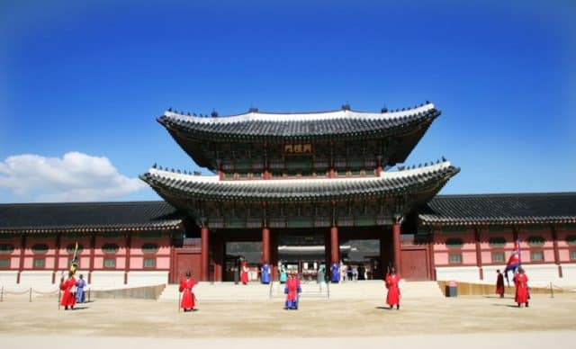

Du lịch Hàn Quốc
Welcome to Korea
Welcome to Korea
Bạn sẽ rất ngạc nhiên khi biết rằng ở Seoul không chỉ có 1 mà có những 5 cung điện chính. Gyeongbokgung là cung điện lớn nhất và quan trọng nhất của Hàn Quốc. Cùng với Tử Cấm Thành ở Bắc Kinh, Seoul cũng được xem là một trong những điểm du lịch đặc sắc, mang đậm đà bản sắc văn hóa truyền thống của quốc gia qua các công trình kiến trúc lâu đời, cổ kính và đẹp tráng lệ.

Địa điểm du lịch Hàn Quốc - Cung điện Gyeongbokgung là một khu phức hợp lớn, nơi có cả Bảo tàng Dân gian Quốc gia Hàn Quốc thu hút rất nhiều khách tham quan mỗi ngày. Đến Gyeongbokgung thì làm gì? Thuê ngay một bộ trang phục truyền thống Hanbok thật rực rỡ, một chiếc xe đạp nhỏ xinh để được miễn phí vé vào cổng tham quan cung điện và tha hồ sống ảo kiểu cung đình nhé.
Cung điện hoàng gia gyeongbokgung là địa điểm tham quan tuyệt vời nhất khi đến tham quan đất nước Hàn Quốc. Bởi vì mỗi mùa nó đều có một vẻ đẹp khác nhau với vẻ đẹp uy nghiêm của cung điện cùng với vẻ đẹp hài hòa của thiên nhiên nên mùa nào tới đây cũng có một vẻ đẹp lạ thường. Nhưng có lẽ tham quan vào mùa thu là để lại nhiều ấn tượng nhất đối với du khách.

Mùa thu ở Hàn Quốc với một màu vàng rực, đỏ thắm của những chiếc lá phong sẽ là một trải nghiệm tuyệt vời lí thú mà bạn không thể quên được. Bạn hãy check in lại những bức ảnh tuyệt vời này để lưu lại khoảnh khắc đó nhé. Ngoài ra khi bạn có cơ hội đến tham quan Gyeongbokgung thì đừng bỏ qua Hương vĩnh đình tọa lạc ở giữa một vườn sen thơm ngát, có lan can gỗ bao quanh để du khách có thể nghỉ ngơi, check in những ảnh đẹp ở bờ hồ.
Gyeongbokgung Hàn Quốc nằm ở phía bắc của Seoul với một tên gọi khác là Cung Cảnh Phúc có ý nghĩa là cung điện của ánh sáng và hạnh phúc và là một cung điện chính. Cung điện được hoàn thành vào năm 1934 do vị vua đầu tiên của triều đại Joseon là Taejo được tái lập vào năm 1867. Đây là cung điện lớn nhất trong năm cung điện và là cung chính của triều đại Triều Tiên. Vua chúa Triều Tiên đã chọn Gyeongbokgung Hàn Quốc là nơi thiết triều chính và được xây dựng trên một mảnh đất rộng bằng phẳng theo quy hoạch. Đây chính là biểu tượng cho quyền lực thời phong kiến của Triều Tiên. Điện Thái Hòa ở Khu di tích Đại Nội Huế có kiến trúc tương đương với cung điện Cung Cảnh Phúc ở Vương Triều.
Khuôn viên của Cung Cảnh Phúc có vườn hoa vườn cỏ được cắt tỉa thường xuyên, nghệ thuật, điển hình cho nghệ thuật vườn Hàn Quốc. Đó chính là do kết giữa vẻ đẹp của thiên nhiên và bàn tay lao động của con người.
Nếu du khách tham quan đúng dịp thì sẽ chứng kiến được nghi lễ diễu binh ở trong cung điện để diễn tả lại một phần hào hùng của triều đại ngày xưa.
Là nơi tổ chức mọi hoạt động chính của Triều đình và là nơi thiết triều của vua và các đại quan, tiếp đón các đại sứ quán. Cần Chính Điện là cung điện cao nhất và chính nhất của cung điện Cung Cảnh Phúc.
Là nơi đẹp nhất trong cung điện Gyeongbokgung Hàn Quốc. Nơi này thường để tổ chức những yến tiệc, diễn ra ca múa, nhạc để đãi sứ thần ngoại bang. Khánh Hội Lâu được xây dựng theo kiến trúc hai tầng. Tầng 1 được bày trí bằng rồng và hoa, được hình thành bởi 48 cột đá. Tầng 1 dành cho các quan thần bậc thấp và tầng 2 dành cho vua chúa và đại sứ ngoại bang.
Là cổng chính của cung điện Gyeongbokgung Hàn Quốc được xây dựng với lớp mái 3 tầng và ba cửa. Trong đó có cửa chính là lối cao nhất là dành cho vua. Hai cửa còn lại dành cho các quan đại thần trong triều đình. Trên nóc nhà có một quả chuông to dùng để thông báo.
Khu nhà rộng 9 gian, gian giữa dành cho vua nghỉ ngơi sàn được lát ván gỗ.
Ở phía sau cung này là một ngôi vườn rất rộng được tô điểm nghệ thuật bằng các hình phượng, lân, hoa lá…Là nơi nghỉ dưỡng của Hoàng Hậu.
Đây là nơi lưu trữ bảo tồn văn hóa lịch sử thời Joseon. Được mở vào các ngày trong tuần trừ thứ 2. Trong đó có hướng dẫn chi tiết bằng cả tiếng anh lẫn tiếng việt, Nhật và Trung.
Bảo tàng Dân gian Quốc gia ở Gyeongbokgung là nơi bày trí các vật dụng đồ cổ sinh hoạt hàng ngày, văn hóa dân gian từ thời cổ đại đến bây giờ. Mở cửa các ngày trong tuần trừ thứ 3 và các ngày mồng 1/1 hàng năm.
Bạn muốn đi đến cung điện Gyeongbokgung nhanh nhất thì chỉ có đi tàu điện ngầm Cung điện mở cửa hàng ngày trừ thứ ba là đóng cửa ( 9h sáng đến 18h) Bảo tàng đóng cửa vào thứ 2 hàng tuần.
Vé vào tham quan cung điện Gyeongbokgung là 3000 won/vé.
Nếu có cơ hội đến với Hàn Quốc thì cung điện Gyeongbokgung là một gợi ý lý tưởng đó. Hãy chuẩn bị đến đó khám phá ngay các bạn nhé!GỢI Ý TOUR DU LỊCH HÀN QUỐC |
|---|
>> Du Lịch Hàn Quốc: Hà Nội – Seoul – Lotte World – Trượt Tuyết Jangjipine 5 Ngày Trượt Tuyết Bay Jeju Air chỉ với 12.500.000 đồng
|
Top 20 điểm tham quan nhất định phải ghé thăm trong hành trình chinh phục Seoul

Điện thoại: 0903357616
Email: thaontps24690@fpt.edu.vn